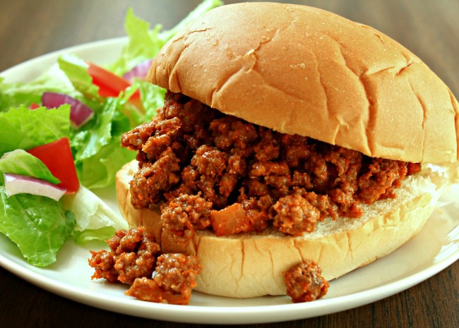

Sloppy Joes

Description
A sandwich with a filling of ground beef that has been seasoned with a sauce of tomatoes and spices.
Ingredients
Steps
- In a medium skillet over medium heat, brown the ground beef, onion, and green pepper.
- Drain off liquids.
- Stir in the garlic powder, mustard, ketchup, and brown sugar; mix thoroughly
- Reduce heat, and simmer for 30 minutes.
- Season with salt and pepper.